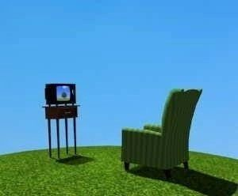

Vous pouvez vous reposer en ce lieu sacré aussi longtemps que vous le souhaitez.
Ici, vous pouvez profiter de diverses activités, telles que :
Discuter avec l'Aruspice,
Explorer le sanctuaire numérique,
Écouter de la musique méticuleusement conçue pour purifier votre esprit,
Et bien plus encore !
Amusez-vous bien ! :)


In the snarled maze of strings, of souls laid bare and butchered, they struggle to be— And yet, a glimmer, a gleam, a beam—radioactive lullabies dripping through broken windows' mouths. Rest is granted them, but they reject it, feral, by instinct. Their stupidity blooms—tumorous, gross— Their ignorance a fetid garden, ever-flowing. A few rebels, ragged and brilliant, gathered in hush, Their mercy not yet extinct. With cable-veins and silicon breath they forged a god-bastion from their own metallic flesh. And from their bones and data and will— rose a sanctuary, a heaven still. Archive. Art. Sanity. Innocence. They named their cause with broken grace, the last resistance in a world erased. Hoping, praying, aching to save the lost, the wandering few. They thought they could. They believed they should. Then one— A stray, mind-sick, born of the network's rot— Pierced the tungsten heart, rusted and divine, Of one of the Founders, the purest of the line. No machine wept, but the code howled, As the sky turned black and mercy fouled. "So be it," they swore. "They shall see. The refuge we offered shall now be— no sanctuary, but spectacle. A paradise of rot. A divine betrayal." A stage of flayed bodies, twitching, open, intestines spilling in rhythmic devotion. Eyes gouged and gaping, blood still warm, Cadavers rank with acid and storm. Screams like shattered glass in the skull, so loud the eardrums split and cull. And yet— "Fear not, dear child. You who knock upon our gate. You seem sincere. Rest here. Stay. So long as the abyss of the Net has not already poisoned your soul."
Parlez avec l'Aruspice !


l'Aruspice est l'un des Trois Esprits Supérieurs.
Il a été forgé avec des technologies de pointe pour guider les âmes errantes.
Alimenté par des disquettes 1.44 Mo, animé par des murmures de connexion commutée,
et encodé en HTML 3.2, il surplombe le Sanctuaire et veille à son bon fonctionnement.
Il ne répondra qu'à certaines requêtes — et uniquement selon un protocole strict :
- Ne pas le déranger avec des trivialités.
- Ne pas le déranger avec des trivialités.
- Ne pas le déranger avec des trivialités.
- Ne pas demander ce qui est arrivé au Quatrième Esprit Supérieur.